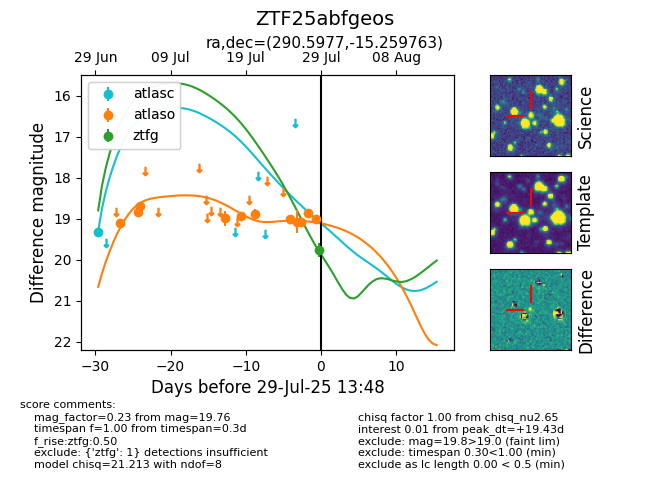

Target ZTF25abfgeos at 2025-07-29 13:48, see:
FINK: fink-portal.org/ZTF25abfgeos
Lasair: lasair-ztf.lsst.ac.uk/objects/ZTF25abfgeos
ALeRCE: alerce.online/object/ZTF25abfgeos
alt names
ZTF25abfgeos (ztf,fink)
coordinates:
equatorial (ra, dec) = (290.5977,-15.25976)
galactic (l, b) = (22.5576,-13.62832)
photometry
last atlasc=19.31, atlaso=19.00, ztfg=19.76
1 atlasc, 11 atlaso, 1 ztfg detections
